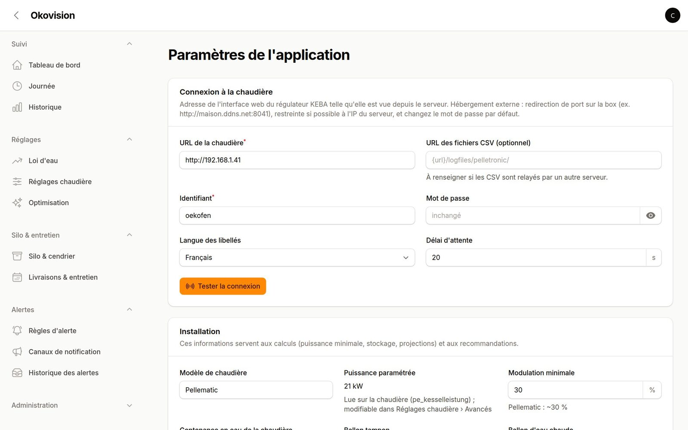

Architecture
Okovision fait trois choses avec la chaudière :
- il télécharge les fichiers CSV
/logfiles/pelletronic/touch_AAAAMMJJ.csv, qui contiennent une ligne par minute ; - il lit l'état en direct et les réglages par l'interface web du Touch (
/index.cgi) ; - il écrit les réglages quand vous le demandez, avec contrôle des bornes, relecture et journal.
| Où l'installer | Avantages | À prévoir |
|---|---|---|
| Hébergement mutualisé (O2Switch, etc.) | Accessible partout, sauvegardé, rien à faire tourner chez soi | Redirection de port sur la box ; IP publique ou DNS dynamique |
| Chez vous (NAS, Raspberry Pi, Docker) | Pas de port ouvert vers la chaudière, données à la maison | Une machine allumée en permanence ; accès extérieur par VPN si besoin |
1. Préparer la chaudière
- Raccordez le Pelletronic Touch au réseau par un câble Ethernet relié à la box ou à un switch.
- Donnez-lui une adresse IP fixe, sinon la redirection de port cessera de fonctionner le jour où l'adresse change.
Deux méthodes : une IP statique dans le menu réseau du Touch (IP-Config), ou un bail DHCP statique réservé sur la box pour l'adresse MAC de la chaudière.
Choisissez une adresse hors de la plage DHCP de la box, par exemple
192.168.1.41. - Vérifiez l'accès en local : depuis un ordinateur de la maison, ouvrez
http://192.168.1.41/. La page de connexion du Touch s'affiche (identifiant d'usineoekofen/oekofen). Le fichier du jour doit aussi être accessible, par exemplehttp://192.168.1.41/logfiles/pelletronic/touch_20261104.csv. - Changez le mot de passe par défaut avant d'exposer la chaudière sur Internet.
2. Redirection de port sur la box (NAT)
Votre box partage une seule adresse IP publique entre tous les appareils de la maison. Par défaut, elle bloque les connexions qui arrivent de l'extérieur. La redirection de port (NAT/PAT) lui indique d'envoyer les connexions reçues sur un port donné vers un appareil précis du réseau local.
Règle à créer
| Protocole | TCP |
|---|---|
| Port externe | un port non standard, par exemple 8041 (évitez 80, très scanné) |
| Appareil / IP de destination | l'IP fixe de la chaudière, par exemple 192.168.1.41 |
| Port interne | 80 |
| IP source autorisée | l'IP publique du serveur Okovision, si la box permet ce filtre |
L'URL à saisir ensuite dans Okovision sera http://<votre-ip-publique-ou-nom>:8041.
Selon votre box
- Freebox : Freebox OS (
mafreebox.freebox.fr) › Paramètres de la Freebox › Mode avancé › Gestion des ports. Fixez d'abord l'adresse de la chaudière dans l'onglet DHCP (bail statique). - Livebox (Orange) : interface
192.168.1.1› Réseau › NAT/PAT, puis l'onglet DHCP pour l'adresse fixe. - Bbox, box SFR et autres : cherchez « NAT », « Redirection de ports », « Port forwarding » ou « Serveurs virtuels » dans l'interface d'administration.
Les menus changent selon le modèle et la version du logiciel de la box. Consultez l'aide de votre opérateur si vous ne les trouvez pas.
Adresse publique et nom de domaine
- Pour connaître votre IP publique, ouvrez
https://ifconfig.medepuis un appareil de la maison. - Si elle change (IP dynamique), utilisez un DNS dynamique. Beaucoup de box en proposent un intégré ; sinon, des services comme No-IP ou DuckDNS conviennent.
Exemple d'URL :
http://maison.ddns.net:8041. - IP partagée (CGNAT) : certains opérateurs, sur la fibre ou la 4G/5G, partagent une IPv4 entre plusieurs clients. Seule une plage de ports est alors disponible, ou aucune. Demandez une IPv4 « full stack » ou dédiée à votre opérateur (souvent gratuit, par exemple chez Free).
- La redirection de port concerne l'IPv4. En IPv6, il n'y a pas de NAT : il faut ouvrir le pare-feu de la box pour l'adresse IPv6 de la chaudière, si elle en a une.
Tester depuis l'extérieur
Désactivez le Wi-Fi d'un téléphone et ouvrez http://<ip-publique>:8041/ en 4G/5G : la page de connexion du Touch doit apparaître.
Depuis le réseau de la maison, ce test échoue souvent, car beaucoup de box ne gèrent pas l'accès à leur propre IP publique depuis l'intérieur (« NAT loopback »).
Sur l'hébergement, testez depuis le terminal SSH :
curl -sI http://maison.ddns.net:8041/ | head -1Sécurité. L'interface du Touch est en HTTP, sans chiffrement, et donne accès à tous les réglages de la chaudière.
- Changez le mot de passe d'usine
oekofen. - Si votre box le permet, n'autorisez que l'IP du serveur Okovision. Sur l'hébergement,
curl -4 ifconfig.medans le terminal SSH donne l'adresse sortante du serveur. - Utilisez un port externe non standard, et ne placez jamais la chaudière en DMZ.
- Si vous ne voulez pas exposer la chaudière, installez Okovision chez vous et accédez-y par un VPN. Beaucoup de box proposent un serveur WireGuard ou OpenVPN.
3. Installer l'application sur l'hébergement
Les étapes ci-dessous concernent O2Switch (cPanel) et s'adaptent à tout hébergement PHP avec accès SSH. Les assets (CSS/JS) sont déjà compilés dans le dépôt : Node.js n'est pas nécessaire sur le serveur.
- PHP : cPanel › Sélectionner une version de PHP › PHP 8.4 ou plus récent, avec les extensions
pdo_mysql,intl,zip,gdetbcmath. - Base de données : cPanel › Bases de données MySQL. Créez une base et un utilisateur, puis donnez-lui tous les privilèges sur la base.
- Code : depuis le terminal SSH (cPanel › Terminal) :
cd ~ git clone https://github.com/bertrandgorge/okovision.git okovision cd okovision composer install --no-dev --optimize-autoloader cp .env.example .env - Fichier
.env: renseignez au minimumAPP_ENV=production APP_DEBUG=false APP_URL=https://chaudiere.mondomaine.fr DB_CONNECTION=mysql # ou mariadb DB_HOST=localhost DB_DATABASE=cpaneluser_okovision DB_USERNAME=cpaneluser_okovision DB_PASSWORD=… MAIL_MAILER=smtp # pour les alertes par e-mail BOILER_URL=http://maison.ddns.net:8041 - Initialisation :
php artisan key:generate php artisan migrate --force php artisan db:seed --force # règles d'alerte par défaut php artisan make:filament-user # votre compte php artisan storage:link - Domaine : cPanel › Domaines. Créez un sous-domaine (par exemple
chaudiere.mondomaine.fr) dont la racine estokovision/public, puis activez le certificat SSL (AutoSSL / Let's Encrypt).
4. Tâche planifiée
Une seule tâche cron suffit (cPanel › Tâches Cron). Laravel enchaîne ensuite la récupération des CSV, l'agrégation, les alertes et les tâches de nuit :
*/5 * * * * cd ~/okovision && php artisan schedule:run >> /dev/null 2>&1Toutes les 5 minutes est recommandé. Un cron toutes les 30 minutes ou toutes les heures fonctionne aussi. Les alertes sont alors décalées d'autant, et le pilotage par blocs n'est pas disponible. Les CSV sont récupérés toutes les 30 minutes ; le bouton « Actualiser » du tableau de bord force une récupération.
5. Configurer Okovision
Connectez-vous avec le compte créé, puis ouvrez Administration › Paramètres.

- Connexion à la chaudière : l'URL publique (
http://maison.ddns.net:8041), l'identifiant et le nouveau mot de passe. Cliquez sur Tester la connexion. Si les CSV sont relayés par un autre serveur, indiquez leur adresse dans URL des fichiers CSV. - Installation : modèle, modulation minimale, contenance en eau de la chaudière, ballon tampon, ballon d'eau chaude, émetteurs, surface et année de la maison. Ces informations servent aux calculs de puissance, de stockage et aux recommandations. La puissance paramétrée est lue directement sur la chaudière.
- Granulés : prix, PCI, capacité du silo. Saisissez ensuite une livraison ou un contrôle de niveau dans Silo & cendrier : c'est le point de départ du stock, et chaque nouvelle saisie recalibre le débit de la vis.
- Alertes : créez un canal (e-mail, Slack, Telegram ou webhook) dans Canaux de notification, puis rattachez-le aux règles d'alerte.
- Rapport pour LLM (facultatif) : générez un jeton dans les paramètres pour accéder à
/diagnostic.md?token=…sans session.
Les mesures apparaissent après le premier passage du cron : les CSV encore présents sur la chaudière sont récupérés.
6. Importer l'historique de la version 1
Si vous utilisiez l'ancien Okovision, importez son dump MySQL dans une seconde base, renseignez LEGACY_DB_* dans .env, puis lancez :
php artisan okovision:import-legacyComptez une vingtaine de minutes pour 12 ans de données. Les mesures, les événements du silo (livraisons, entretien) et les profils de réglages sont repris, puis les cycles et synthèses sont recalculés. Vous pouvez aussi importer des CSV de la chaudière (clé USB) depuis Administration › Données & archives.
Installation locale avec Docker
Pour essayer Okovision ou le faire tourner sur une machine de la maison, sans redirection de port, utilisez BOILER_URL=http://192.168.1.41 :
git clone https://github.com/bertrandgorge/okovision.git && cd okovision
cp .env.example .env
docker compose up -d # http://localhost:8080
docker compose exec -u www-data app composer install
docker compose exec -u www-data app php artisan key:generate
docker compose exec -u www-data app php artisan migrate --seed
docker compose exec -u www-data app php artisan make:filament-user
docker compose --profile scheduler up -d scheduler # tâches planifiéesMises à jour et sauvegardes
Sur le serveur :
cd ~/okovision && ./deploy.shLe script fait un git pull, installe les dépendances, passe l'application en maintenance, applique les migrations, puis reconstruit les caches.
À sauvegarder, en plus de la base de données : le fichier .env et le dossier storage/app/, qui contient les archives des mesures.
Dépannage
| Symptôme | Piste |
|---|---|
| « Chaudière injoignable » | Testez curl -sI http://<url>:8041/ depuis le serveur. Vérifiez l'IP fixe de la chaudière, la règle NAT, le filtre d'IP source, et que l'IP publique n'a pas changé. |
| Fonctionne en local, pas depuis l'extérieur | IP partagée (CGNAT), port bloqué par l'opérateur, ou test fait depuis la maison (NAT loopback). Testez en 4G. |
| Erreur 500 de la chaudière à la lecture | Le Touch exige un en-tête Accept-Language et sature au-delà de ~25 variables par requête. Okovision le gère ; vérifiez qu'aucun proxy ne retire les en-têtes. |
| « Plus de données reçues » | Le cron ne tourne pas, ou la chaudière n'écrit plus ses CSV. Vérifiez la tâche cron et l'URL des CSV. |
| Page blanche après mise à jour | php artisan optimize:clear, puis consultez storage/logs/laravel.log. |
Une question, un bug ? Ouvrez une issue sur GitHub.